\(\left\langle E_\text{pot} \right\rangle\) er ikke den traditionelle potentielle energi mellem to legemer, men en egenenergi et legeme (en gassky i dette tilfælde) har blot i kraft af sin egen masse.
For en uendeligt stor sky, som har trukket sig sammen til en kugle med radius \(R\) er den potentielle egenenergi givet ved
\[\left\langle E_\text{pot} \right\rangle = - \frac{3}{5}\cdot \frac{G M^2}{R}\]
Halvdelen af energien går til opvarmning af skyen, mens den anden halvdel forlader skyen som strålingsenergi.
Solens alder pba. gravitation alene
Beregn Solens anslåede alder, hvis frigivet potentiel energi alene skal drive energiproduktionen. Brug formlerne
Kan begynde, når kernetemperaturen er over ca. \(10\cdot 10^6\) K.
\begin{align*}
1. fase &: {}_1^1 H + {}_1^1 H \to {}_1^2 H + e^+ + \nu_e \\
2. fase &: {}_1^2 H + {}_1^1 H \to {}_2^3 He + \gamma \\
3. fase &: {}_2^3 He + {}_2^3 He \to {}_2^4 He + {}_1^1 H + {}_1^1 H
\end{align*}
fase: En af protonerne omdannes til en neutron vha den svage kernekraft. Det tager laang tid!
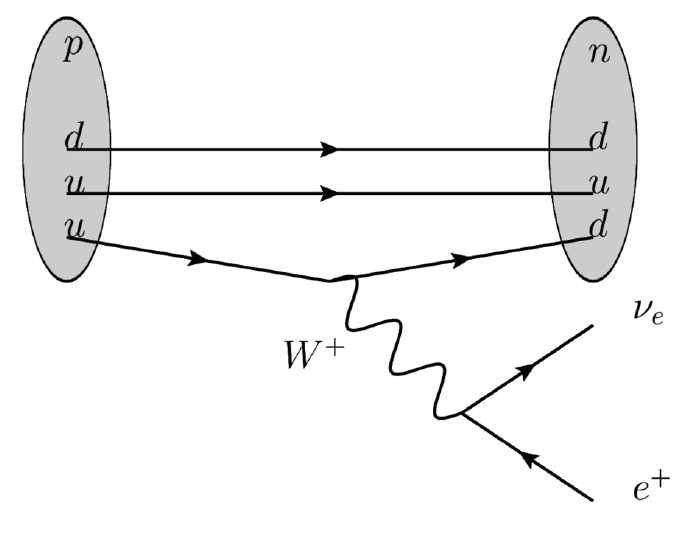
fase: Deuteriumkernen sættes sammen med en proton og danner Helium-3.
Foregår via den stærke kernekraft. Det går lynende hurtigt ift fase 1.
fase: To Helium-3-kerner smelter sammen, men den elektriske frastødning sender to protoner ud igen.
Overblik
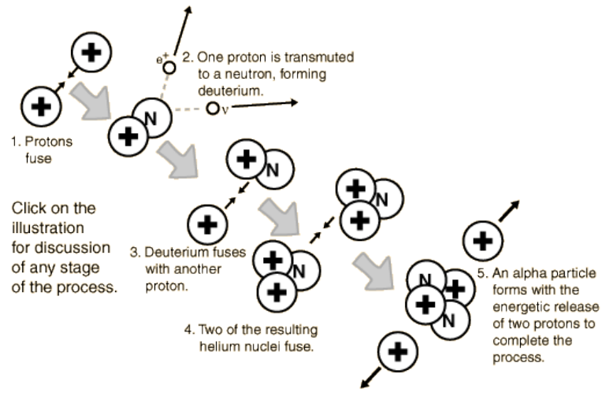
Overblik
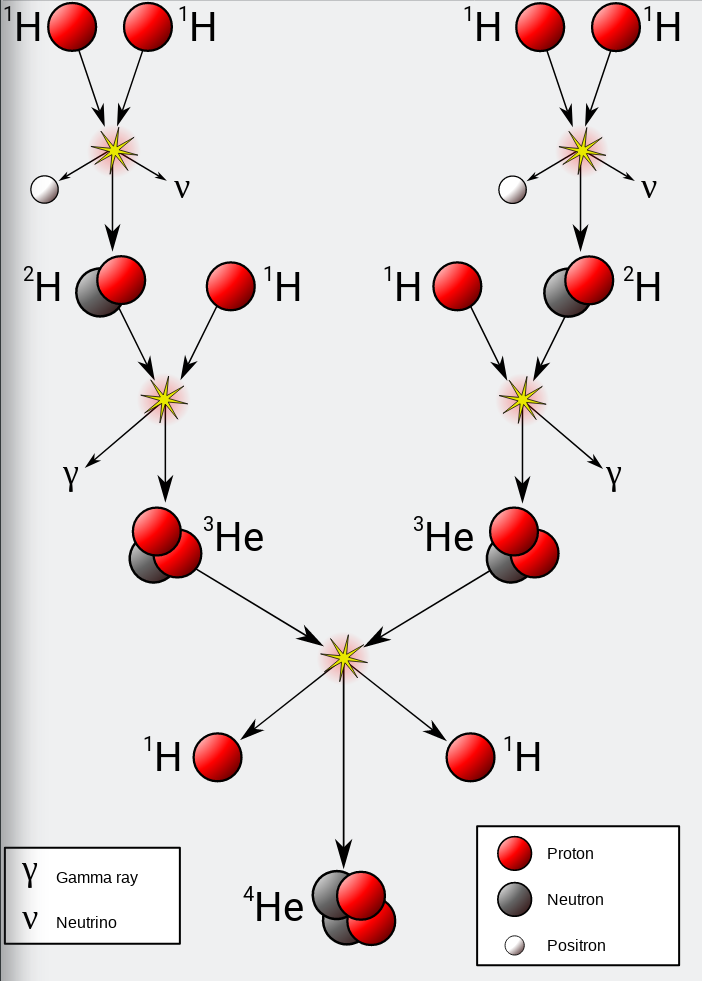
Opgave - Solens energiproduktion
Se dokumentet Opgave_Solens_energiproduktion.pdf
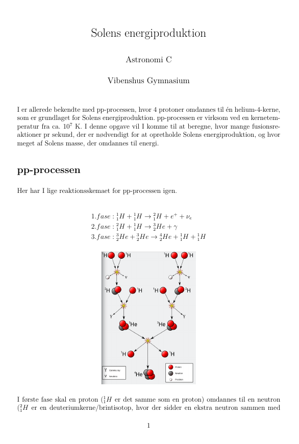
Ny hydrostatisk ligevægt
Gastryk og strålingstryk for fusionsprocesserne balancerer tyngdekraften.
Meget stabilt.
Mindre fusion -> sammentrækning -> højere temp -> mere fusion.
Mere fusion -> gasskyen ekspanderer -> lavere temp -> mindre fusion.
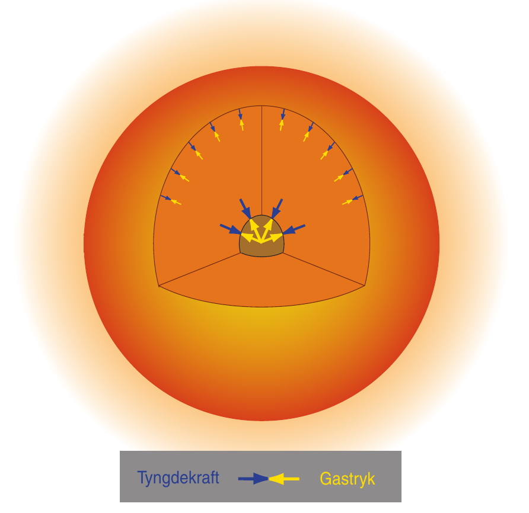
Solens opbygning
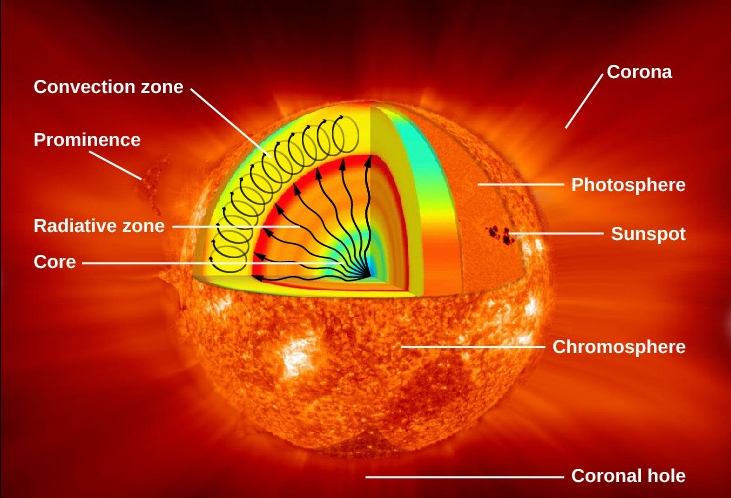
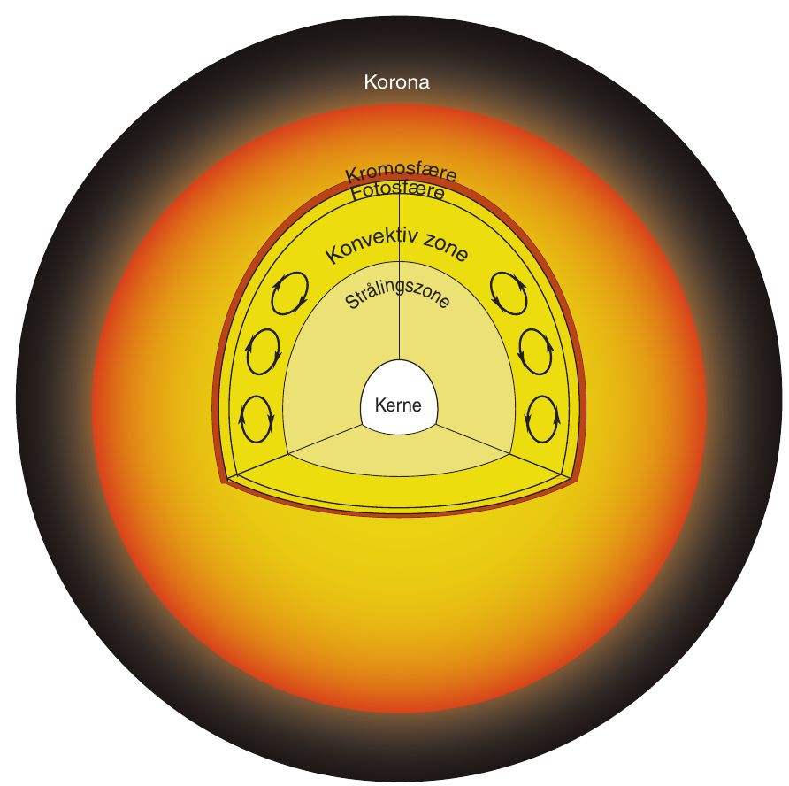
Solen svulmer op
Brint omdannes til helium.
kernens densitet forøges.
Kernen trækker sig dermed sammen.
Temperaturen stiger.
De ydre lag bliver varmere og udvider sig.
De varmere ydre lag udsender mere stråling.
Luminositeten stiger altså løbende pga større overflade og højere temp.
For nuværende er Solens luminositet vokset med ca. 40 %.
CNO-cyklussen
For større og (dermed) varmere stjerner, findes der andre fusionsprocesser også.
En af dem er CNO-cyklussen.
Starter ved ca. \(15 \cdot 10^6\) K.
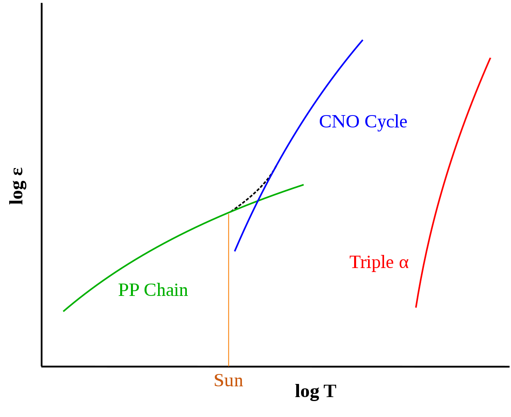
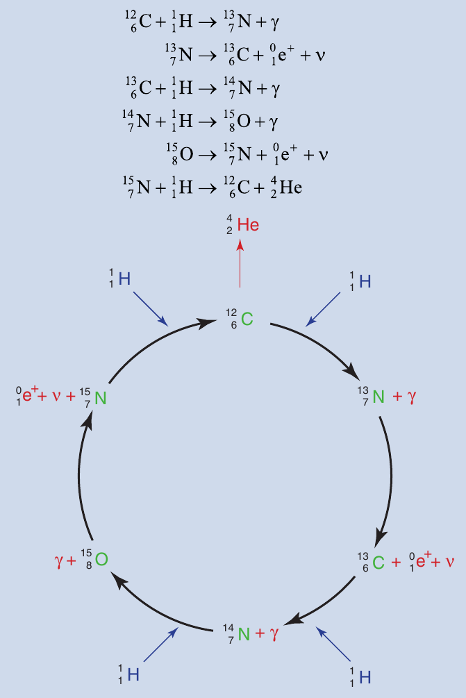
Levetid på hovedserien
Levetiden for en stjerne på hovedserien kan beregnes vha. formlen.
Luminositet, enten i watt eller i enheder af Solluminositeter. Logaritmisk.
Absolut størrelsesklasse (nogen gange også visuel, stiger nedad! Mere om det senere.)
Opgave 10
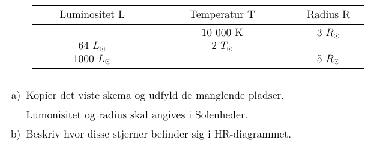
Se side 40 i kompendiet om stjerner.
Stjerneudvikling i HR
Skitsér selv HR-diagram på et stykke papir.
Hvad er det nu, der skal være på x- og y-aksen?
Indtegn de fire stadier i en let stjernes udvikling
Stjernedannelse
Hovedseriefase
Kæmpestjernefase
Stjernedød
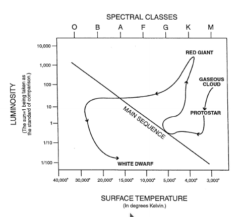
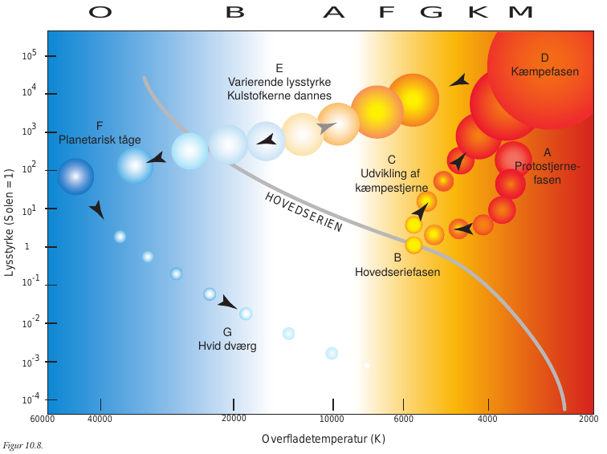
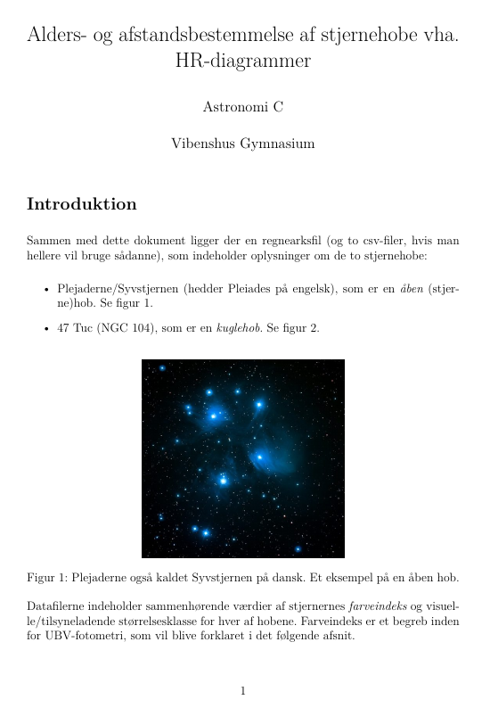
To stjernehobe
Plejaderne/Syvstjernen.
En åben hob.
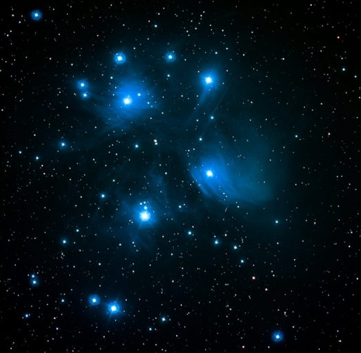
47 Tuc (NGC 104).
En kuglehob.
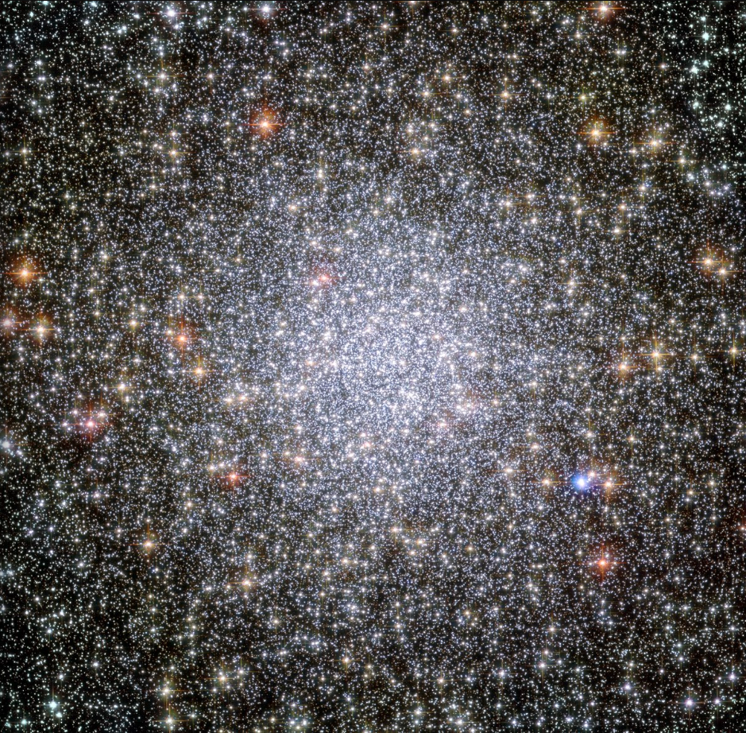
UBV-fotometri og farveindeks
Man sætter forskellige filtre foran teleskopet, som kun lukker udvalgte bølgelængder igennem.
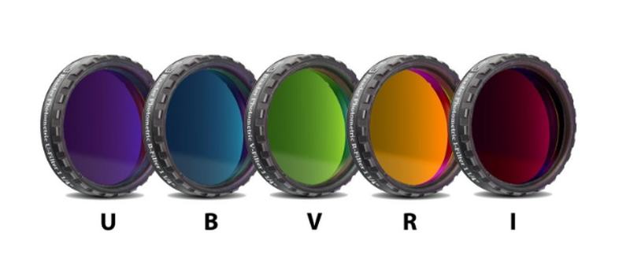
Filter
Område
Effektiv bølgelængde [nm]
Båndbredde [nm]
U
Ultraviolet
365
70
B
Blåt
440
100
V
Visuelt
550
90
R
Rødt
640
150
I
Infrarødt
790
150
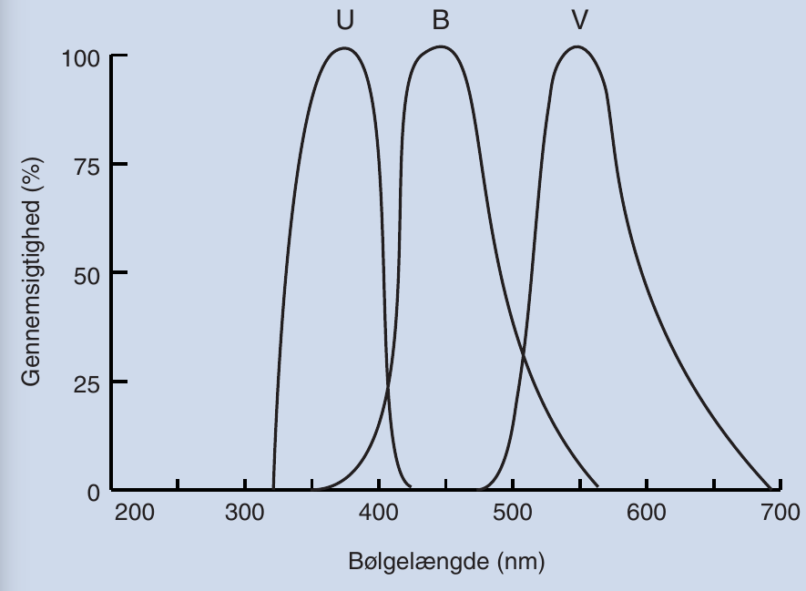
Filtrenes navne står også for den tilsyneladende størrelsesklasse set igennen filtret. F.eks. \(B= m_B\).
Ved at trække to størrelsesklasser med forskellige filtre fra hinanden, kan man skelne varme og kolde stjerner fra hinanden.
Typisk anvender man farveindekset \(\left( B -V \right)\).
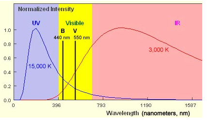
Der er en klar sammenhæng mellem farveindekset (nogen gange bare kaldet farven) og temperaturen.
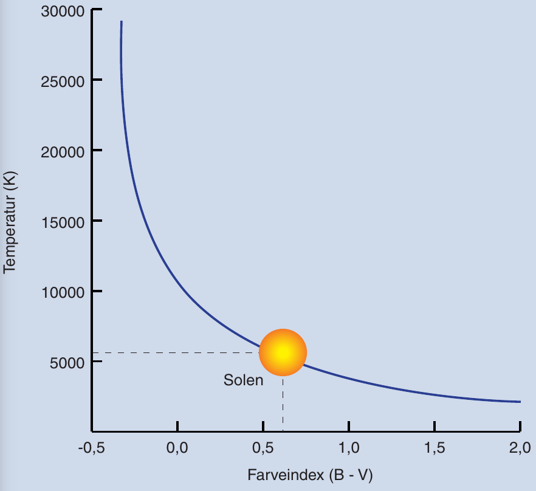
Farveindekset \(B-V = 0\) er kalibreret til en temp på 10 000 K.
Bl.a. efter stjernen Vega i Lyren.
Lavt farveindeks (og sågar negativt) betyder varm stjerne.
Højt farveindeks betyder kold stjerne.
Stjerne
Farve
Temp [K]
B-V
Rigel
Blå
20000
-0.24
Vega, Sirius
Hvide
10000
0.00
Canupus
Hvidgul
7000
0.35
Solen, Alfa Centauri
Gule
6000
0.65
Aldebaran
Rød
4000
1.20
Betelgeuse
Rød
3000
1.70
Farve-størrelsesklassediagram
Kaldes også et CMD (Color Magnitude Diagram på engelsk)
Farveindekset (B-V) på x-aksen.
Hvis man kender afstanden til en stjerne, så plotter man den absolutte størrelsesklasse inden for det visuelle filter langs y-aksen.
Hvis man studerer stjernehobe kan man nøjes med at plotte V langs y-aksen.
y-aksen vokser nedad!
Det er meget nemmere at tage to billeder med to forskellige filtre end at finde spektrummerne for en masse stjerner i en stjernehob og måle/beregne deres individuelle luminositeter.